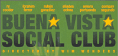
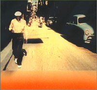

  |
Ibrahim Ferrer(vocals, back vocals, multi instruments); Compay Segundo(guitar, conga, vocals, back vocals); Ruben Gonzalez(piano); Omara Portuondo(vocals); Eliades Ochoa(guitar, vocals); Orlando 'Cachaíto' Lopez(bass); Barbarito Torres(laoud); Manuel 'El Guajiro' Mirabal(trumpet); Manuel 'Puntillita' Licea(vocals, back vocals, chorus); Pio Leyva(vocals, back vocals, chorus); Alberto Valdes(maraccas, chorus); Juan de Marcos González(conductor, back vocals, chorus, guiro); Ry Cooder(slide guitar, mandolin, vocals, multi instruments, producer); Joachim Cooder(drums, multi instruments); Salvador Repilado Labrada(bass); Benito Suárez Magana(guitar); Carlos González(bongos, cowbell); Luis Barzaga(back vocals, chorus); Lázaro Villa(conga, guiro); Julio Fernandez(maraccas, vocals); Julienne Oviedo Sánchez(timbales) |
1. Chan Chan (Francisco Repilado) - son 2. De Camino a La Vereda (Ibrahim Ferrer) - son 3. El Cuarto de Tula (Luis Marquetti) - son/descarga 4. Pueblo Nuevo (Ruben Gonzalez) - danzon 5. Dos Gardenias (Isolina Carillo) - bolero 6. ¿ Y Tu Que Has Hecho ? (Eusebio Delfin) - bolero 7. Veinte Anos (Maria Teresa Vera) - bolero 8. El Carretero (Guillermo Portabales) - guajira 9. Candela (Faustino Oramas) son/tumbao 10. Amor de Loca Juventud (Rafael Ortiz) 11. Orgullecida (Eliseo Silveira) 12. Murmullo (Electo Rosell 'Chepin') - ballad 13. Buena Vista Social Club (Orestes Lopez) - danzon 14. La Bayamesa (Sindo Garay) - criolla
Buena Vista Social Club directed by Wim Wenders, 1999, Artisan/Road Movies Filmproduktion
- Afro-Cuban All Stars - A Toda Cuba Le Gusta, Nonesuch/World Circuit, 1997
- Introducing Ruben Gonzales, Nonesuch/World Circuit, 1998

- Buena Vista Social Club Presents Ibrahim Ferrer, Nonesuch/World Circuit, 1999

- Buena Vista Social Club Presents Omara Portuondo, Nonesuch/World Circuit, 1999
- Afro Cuban All-Stars - Distinto, Diferente, Nonesuch/World Circuit, 1999
- The Stars of Buena Vista, Tumi, 2000
Compay Segundo - Lo Mejor De La Vida(The Best in Life), Nonesuch/World Circuit, 1998
Ruben Gonzales - Indestructible, Egrem, 1998
Omara Portuondo and Chucho Valdes - Desafios, Intuition, 1999
Compay Segundo - Calle Salud(Health Street), Elektra/Asylum,1999
Ruben Gonzales(with Noneto Cubano de Jazz) - Sentimento, Egrem, 1999
Ibrahim Ferrer(with Chepin y Su Orquesta Oriental) - Mi Oriente, Tumbao, 1999
Eliades Ochoa - Sublime Ilusion, Virgin/Higher Octave, 1999
Barbarito Torres - Havana Cafe, Atlantic/Havana Caliente, 1999
Compay Segundo - Las Flores de la Vida, WEA, 2000
Ruben Gonzalez & Friends - Contacto, 2000
Ruben Gonzales - Chanchullo, Electra, 2000
Manuel 'Puntillita' Licea - Homenaje, Tumi, 2000
Eliades Ochoa - Tribute to the Cuarteto Patria, Higher Octave, 2000
Cachaito Lopez - Cachaito, Elektra/Asylum, 2001
Omara Portuondo - Dos Gardenias, Tumi, 2001
Compay Segundo - Duets, WEA, 2002
Eliades Ochoa - Estoy Como Nunca, Higher Octave, 2002
Alberto Valdes - Bajando Gervasio, 2002
Ry Cooder & Manuel Galban - Mambo Sinuendo, 2003
Ibrahim Ferrer - Buenos Hermanos, 2003